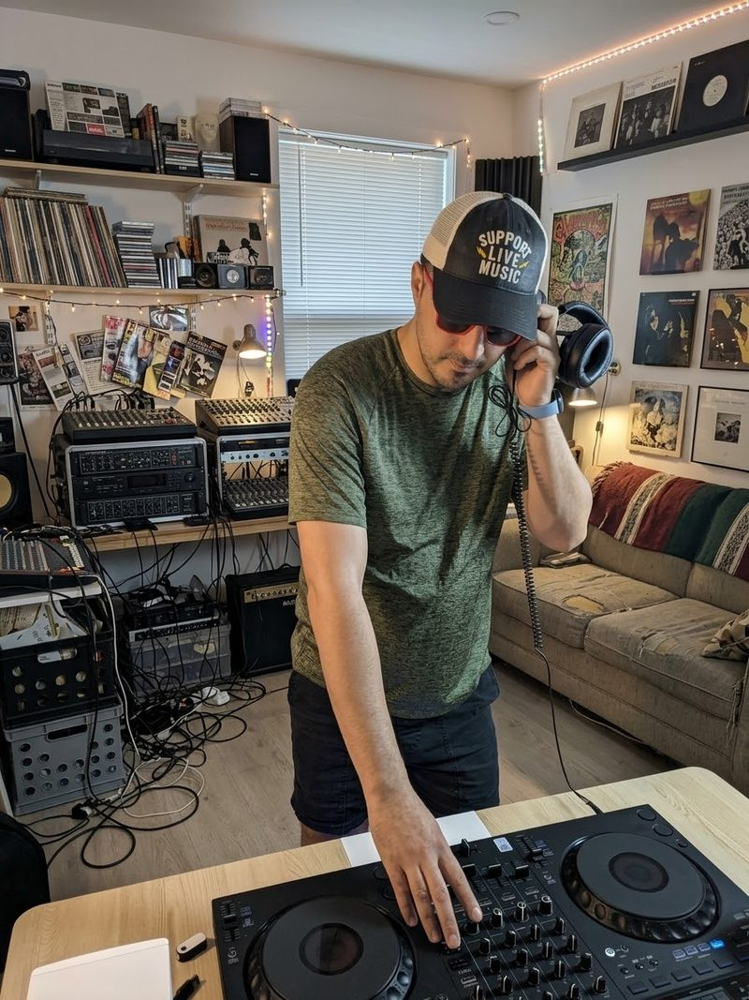

DJing
Outside of research and teaching, I mix on a controller at home, dig through records, and support live music whenever I can.

Live music
Nothing beats hearing music live.
I try to go to shows and support the artists and venues behind them.
From hobby to research
Music made me curious about how the industry behind it is changing. Streaming, digital tools, and online platforms have changed how music is made, shared, and paid for. I see it every time I mix, and I wanted to study it properly.
So, with two co-authors, I have started a series of research papers on digital transformation in the music industry. Our first study will be presented at a PDW in February 2027.